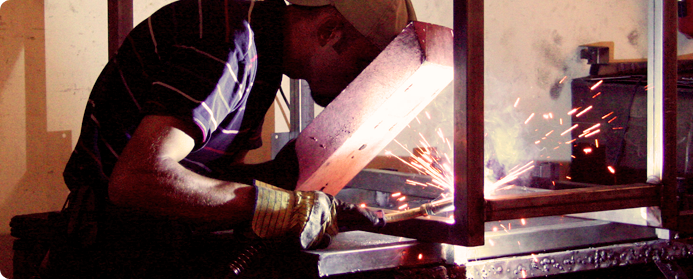

Grand Island, Nebraska
History of Penrose Machining, Inc.
Gene Penrose began Penrose Machining, Inc. in his garage back in 1979 with a turret lathe. With no salesman on the road, Gene built his business by word of mouth and developed a reputation for quality. Since the inception, Penrose Machining, Inc. has grown to a facility of 36,000 square feet with an average of 40 employees. We have been located in our current facility since 1990. We have a full line of CNC Lathe's with bar feeders that have up to a 4" capacity. We also have several quick NC Screw Machines that make short work of your turned and drilled bushings. In 2004 we added a Citizen Cincom M32Y Swiss Screw machine that is a perfect fit for your parts with multiple machining features up to 1.25" diameter.
We also have four vertical machining centers with table travel size up to 20 inches in 'y', 50 inches in 'x', and 25 inches in 'z'. One of these machines is equipped with a pallet changer as well to improve efficiencies and keep your cost to a minimum.
In late 2003, Penrose Machining, Inc. began the journey to achieve ISO 9001:2000 certification and accomplished this task in June of 2004. In June of 2010 we attained ISO 9001-2008 certification. Quality has always been of the utmost importance to our company and employees, but being ISO certified adds a level of conformity and consistency in our processes giving you trust and confidence in working with us.
It is the goal of Penrose Machining, Inc. to supply our customers with high quality machined parts in a timely manner. We pride ourselves in our flexibility to work with our customers in their on going and changing needs for their business progress and development. We strive to develop, manage and advance our manufacturing process to continually improve the profit for our customers and our company.
For a competitive price quote form please contact us with your specifications.
ISO 9001:2015 Certified
- 1979Began with a turret lathe
- 1990Current facility
- 36,000Square feet
- 40Average employees

